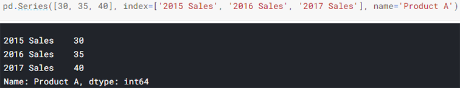
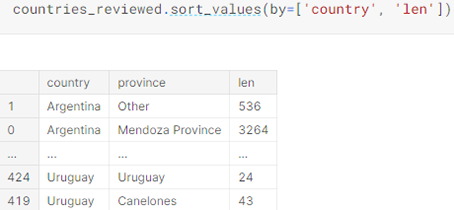

Pandas
Kaggle
There are two core objects in pandas: the DataFrame and the Series.
In this example, the "0, No" entry has the value of 131. The "0, Yes" entry has a value of 50, and so on.
We are using the pd.DataFrame() constructor to generate these DataFrame objects. The dictionary-list constructor assigns values to the column labels, but just uses an ascending count from 0 (0, 1, 2, 3, ...) for the row labels. The list of row labels used in a DataFrame is known as an Index. We can assign values to it by using an index parameter in our constructor:
A Series does not have a column name, it only has one overall name:
A CSV file is a table of values separated by commas. Hence the name: "Comma-Separated Values", or CSV.

These are the two ways of selecting a specific Series out of a DataFrame. Neither of them is more or less syntactically valid than the other, but the indexing operator [] does have the advantage that it can handle column names with reserved characters in them (e.g. if we had a country providence column, reviews.country providence wouldn't work).
Pandas has its own accessor operators, loc and iloc. Pandas indexing works in one of two paradigms. The first is index-based selection: selecting data based on its numerical position in the data. iloc follows this paradigm. To select the first row of data in a DataFrame, we may use the following:
Both loc and iloc are row-first, column-second. This is the opposite of what we do in native Python, which is column-first, row-second. To get a column with iloc, we can do the following:
On its own, the : operator, which also comes from native Python, means "everything". When combined with other selectors, however, it can be used to indicate a range of values. To select the country column from just the first, second, and third row, we would do:
Or, to select just the second and third entries, we would do:
It's also possible to pass a list:
This will start counting forwards from the end of the values:
The second paradigm for attribute selection is the one followed by the loc operator: label-based selection. In this paradigm, it's the data index value, not its position, which matters. To get the first entry in reviews, we would now do the following:
iloc uses the Python stdlib indexing scheme, where the first element of the range is included and the last one excluded (0:10 will select entries 0,...,9); loc, meanwhile, indexes inclusively (0:10 will select entries 0,...,10):
This operation produced a Series of True/False booleans based on the country of each record. This result can then be used inside of loc to select the relevant data:
Pandas comes with a few built-in conditional selectors, two of which we will highlight here. The first is isin:
The second is isnull (and its companion notnull). These methods let you highlight values which are (or are not) empty (NaN):
To see a list of unique values and how often they occur in the dataset, we can use the value_counts() method:
map() returns a new Series where all the values have been transformed by your function:
apply() is the equivalent method if we want to transform a whole DataFrame by calling a custom method on each row:
If we had called reviews.apply() with axis='index', then instead of passing a function to transform each row, we would need to give a function to transform each column.
Note that map() and apply() return new, transformed Series and DataFrames, respectively. They don't modify the original data they're called on. If we look at the first row of reviews, we can see that it still has its original points value:
Pandas provides many common mapping operations as built-ins. Here's a faster way of remeaning our points column:
In this code we are performing an operation between a lot of values on the left-hand side (everything in the Series) and a single value on the right-hand side (the mean value). Pandas will also understand what to do if we perform these operations between Series of equal length. An easy way of combining country and region information in the dataset would be to do the following:
These operators are faster than map() or apply() because they uses speed ups built into pandas. However, they are not as flexible as map() or apply(), which can do more advanced things, like applying conditional logic, which cannot be done with addition and subtraction alone.
You can think of each group we generate as being a slice of our DataFrame containing only data with values that match. This DataFrame is accessible to us directly using the apply() method, and we can then manipulate the data in any way we see fit. Here's how we would pick out the best wine by country and province:
Another groupby() method worth mentioning is agg(), which lets you run a bunch of different functions on your DataFrame simultaneously. We can generate a simple statistical summary of the dataset as follows:
A multi-index differs from a regular index in that it has multiple levels:
The multi-index method you will use most often is the one for converting back to a regular index, the reset_index() method:
Looking again at countries_reviewed we can see that grouping returns data in index order, not in value order. That is to say, when outputting the result of a groupby, the order of the rows is dependent on the values in the index, not in the data. To get data in the order want it in we can sort it ourselves. The sort_values() method is handy for this:
